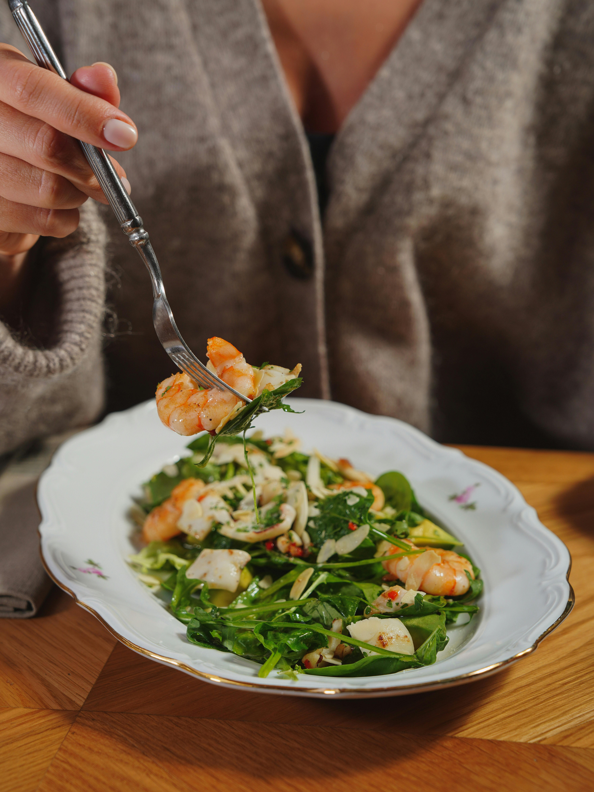

Shrimp and Pepper stir fry

Shrimp and peppers take center stage in this simple but colorful stir-fry with lots of veggies.
Serve over steamed rice or rice noodles.
Ingredients:
Sauce:
- 1/2 cup chicken broth
- 1/4 cup soy sauce
- 2 tbsp rice wine vinegar
- 1 tbsp brown sugar
- 1 tbsp cornstarch
- 1/2 ts garlic powder
- 1/4 ts red pepper
Stir fry:
- 2 tbsp peanut oil
- 1 red bell pepper
- 1 red onion
- 8 ounces snow peas
- 6 green onions
- 11/2 pounds large shrimp
Directions
- Whisk together chicken broth, soy sauce, rice wine vinegar, brown sugar, cornstarch, garlic powder,
and crushed red pepper in a small bowl; set aside
- Heat 1 tablespoon oil in a large wok or skillet over high heat.
Add red pepper, yellow pepper, red onion, snow peas, and green onion, and saute until vegetables are crisp-tender, 3 to 4 minutes.
Remove vegetables to a large bowl.
- Lower heat to medium-high and add remaining 1 tablespoon oil.
Cook shrimp for 2 minutes, flipping over halfway through. Return vegetables to the wok.
Stir sauce and pour over shrimp and vegetables; stir constantly until sauce comes to a simmer and thickens, about 1 to 2 minutes.